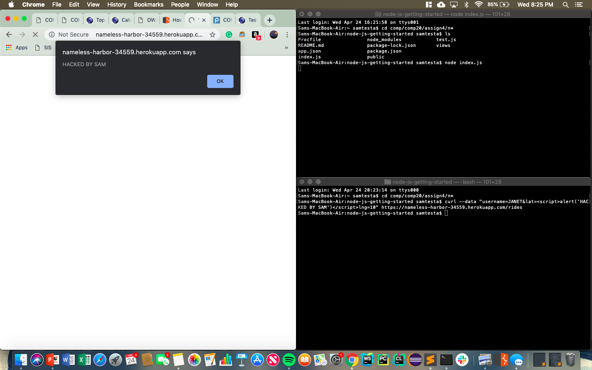
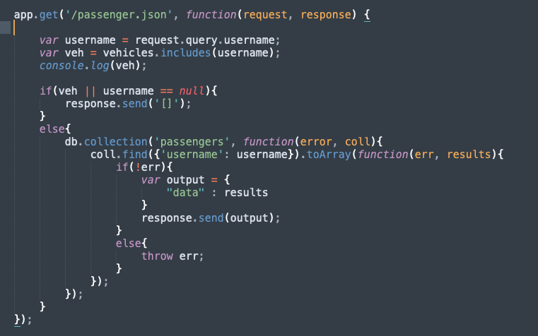

For this assignment, I was hired to investigate possible points of security breaching in a peer's Lyft Knockoff, where they store the data of their passengers and drivers.
I first looked through the user's app and looked at how it got data from the user, as I knew that was the main place there would be vulnerabilites. Using the user data interpretation was how I was able to try to mess with the app.
In this assignment, I found a few main vulnerabilities. Some were privacy issues that are up to the app designer to implement. For example, displaying the latitude and longitude of every vehicle could be dangerous in a real-world application, and is a sensitive data violation. Some vulnerabilities were more serious. I was able to insert Javascript as the value for the latitude or longitude key, and that way redirect the webpage, pop up alert boxes, or any other sort of sketchy stuff. Additionally, I was able to look at possible injection areas, where boolean logic could be messed with in order to access private data from the MongoDB database.
In the post request /rides in index.js
As there is no protection against someone inserting any type of Javascript, I would give this a 3 on the severity scale. XSS is also listed as #3 on OWASP's Top 10 web application vulnerabilities
When I enter data into the application's /rides POST-route, if I enter this data as a vehicle, for example "username=JANET", if I enter script into the lng or lat field, this script will show up on the user's web application, because the lat and lng numbers are never validated nor changed to floats.

To fix this, use a validator that checks for script tags before interpreting the user's data
In the GET /passenger.json request or the POST /rides request
This is definitely level 3 severity because it can allow a hacker access to data they're not supposed to have access to
In the passenger.json GET request, you're able to get the data of passengers. However, using username[$ne]= as the username key, you can get all the data with a username NOT equal to whatever you enter, leaking the database of what could be sensitive data. Also, you can enter into username field username=dsvb'||'1'=='1 and use logic to make a statement always true.

To fix this, use a validator or something to check that the username field does not have anything other than letters in it
In the GET / route in index.js
I would give this 3 on the severity scale because each vehicle's location is put online publicly
In the GET / route, each vehicle in the list's private data is all sent back to the response
On the homepage for the heroku app, all the private data for each vehicle is listed. Although this was the requirement for Assignment 3, in the real world this would be a huge security issue if we could see the positions of all vehicles in an area on apps like Lyft or Uber
Only show the position of a vehicle if it is requested by username, instead of each vehicle
In conclusion, this app was fairly specific in the input it needed to get from the user, however lat and lng were never converted to numbers which made it easy to insert script into the website. Also, not checking the username that was inputted was just a name and did not have any special characters in it cause injection vulnerabilities. Finally, leaking sensitive data onto a website is dangerous and unsafe and should require more user identification validation to access data.
For this, I used a the OWASP Top 10 vulnerabilities list, and I used a link that Ming provided on the Piazza from Kathleen Fisher about NoSQL Injection